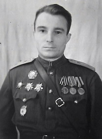

ЗЕМЛЯК
На днях в наш Фонд пришло письмо из Минска от Вячеслава Васильева:
«Мой отец Васильев Николай Васильевич родился в дер. Княжово Максатихинского района Калининской области. Он прошел всю войну. Награжден орденами А.Невского, Красной Звезды, Отечественной войны 1 и 2 степеней, медалями За освобождение Праги, За взятие Берлина, Чешской медалью из рук Людвига Свободы - За храбрость. Начинал войну командиром танковой роты на Западном фронте , закончил заместителем начальника штаба артиллерийской бригады в Берлине. Прошу рассказать о нем его землякам, жителям Тверской области». Выполняем просьбу Вячеслава Николаевича и публикуем отрывки из воспоминаний его отца:
* * *
 … Одним из самых тяжелых периодов войны было время, когда в зимнюю стужу, в глубоком снегу, войска защищали Москву и вели тяжелые бои под Ржевом. Наш солдат здесь сделал первый шаг на том пути, который окончился через три с половиной года в Берлине.
Вспоминается эпизод, от которого дрожь берет и щемит сердце…
Под Ржевом я видел с артиллерийского наблюдательного пункта, как после короткой, но мощной артподготовки к траншеям врага, броском взметнулось подразделение девушек – москвичек. Преодолев малозаметное препятствие, ведя на ходу огонь из автоматов, они приближались к цели. Увидев это, командиры всех минометных и пулеметных подразделений дали команду немедленно открыть огонь, чтобы проложить отважным девушкам путь и оградить их от контратак врага. Они дошли до траншей и заняли их, и это казалось нереально не только нам, но и выбитому из них врагу.
Женщина на войне - противоестественно. Но это было. И здесь, на фронте, они не теряли своей врожденной мягкости, великой терпеливости и обаяния. Мы видели, как они заслоняли собой раненых, оказывали им первую помощь, а затем, взвалив на плечи, тащили в укрытие, чтобы броситься на помощь другим, не страшась витавшей над ними смерти…
Ожесточенность боев, объяснялась тем, что противник, опомнившись от московских ударов и сосредоточив большие силы в районе Ржев – Сычевка – Вязьма, пытался вновь прорваться к столице. Но наши войска, постоянно навязывая противнику боевые действия, срывая сильные контратаки, обескровили его и не дали отвести с этого участка на Сталинградский фронт 4 танковые дивизии.
* * *
ЛАГЕРЬ
В разгар боя, на подступах к Берлину, ко мне на огневую позицию прибежал майор И.Ф.Баранов. “Николай, мои бойцы задержали поляка бежавшего из Луккенвальдского лагеря военнопленных. Он утверждает, что в любую минуту лагерь может быть уничтожен фашистской охраной. Что делать?”
В блиндаже истощенный человек, глотая хлеб вперемешку со слезами, рассказывал об ужасах лагеря. Из его слов выходило, что лагерь большой, интернациональный, есть там и женщины…
Иван Федорович тщетно пытался связаться с командиром бригады. Решение созрело мгновенно, выскочил из землянки: ” Толя…Горшков – за старшего на позиции!, ординарцу: ” Тягачи к орудиям!” Вышедший следом Баранов недовольно крутя головой сказал: ” Не дури. Снять орудия с огневой без ведома комбрига, ты соображаешь… “. “ Иван, ты здесь ни причем, возьму одну батарею, отвечать мне…”
К паре тягачей уже подцеплены орудия с расчетами, проводником берем поляка. Неутерпевший Баранов запрыгивает на ходу, в глазах веселые чертики: ”А, семь бед - один ответ! Я с тобой! ” На большой скорости выскакиваем на дорогу, идущую через сосновый бор к Луккенвальде. Плохо – без разведки, не зная местности… но” бог не выдаст, фашист не сьест ”.
Через 5 -6 километров лес закончился. Перед нами лагерь - множество стоящих рядами бараков. По углам огражденной колючей проволокой зоны, стояли четыре вышки, справа – караульное помещение.
Охрана не дремлет, зло захлебнувшись, ожила пулеметными очередями левая вышка. Но внезапность за нами, мы успеваем, быстро развернувшись в боевой порядок открыть огонь. Первый залп заваливает вышку, следующими накрываем караульное помещение и … прекращаем огонь. Так можно зацепить и бараки. Сдаваться гитлеровцы не собираются, выкуривать же их из лагеря и не задеть своих – невозможно. Сил для штурма маловато. Вдруг, с противоположной стороны лагеря доноситься пулеметно- автоматная стрельба. Кто – то штурмует лагерь с севера. Охрана растерявшись, бросила огневые позиции и, отстреливаясь, небольшими группами стала уходить в лес в западном направлении. Их преследовала рота автоматчиков, так же как и мы пришедшая на помощь военнопленным.
Лагерь оказался разделен на две половины: на одной - наши, на другой - иностранные военнопленные. И если на половине с американцами, англичанами, французами уже слышны восторженные крики, видны радостные обьятия, то большинство русской половины бараков встречает нас молчанием. Заглядываем в окна: внутри битком набито людей. Показываем жестом, мол, выходите, а люди молчат. Когда наши солдаты открыли одну из дверей – из помещения дохнуло нездоровым и удушливым запахом. Вдруг кто-то застонал, и стало слышно шевеление людей, их хрипы и вздохи. Послышался голос: “Не входите. Мы заразно больные “. Я увидел изможденных, прямо по костям обтянутых кожей людей…
Позже мы узнали, что в этом лагере было свыше десяти тысяч пленных из разных стран. Уже трое суток они не пили и не ели, их даже из бараков не выпускали. Больные и обессиленные люди умирали каждые сутки. Теперь все ужасы для них позади.
… Сплошным гудящим потоком, окутанным сизой гарью дизельного топлива, двигались наши войска. Навстречу по обочинам дорог все время шли нескончаемыми группами люди. Обьединившись по национальностям, с флажками своих держав и ленточками национальных цветов, шли угнанные в немецкую неволю. Шли русские, французы, бельгийцы, голландцы, югославы, датчане… |